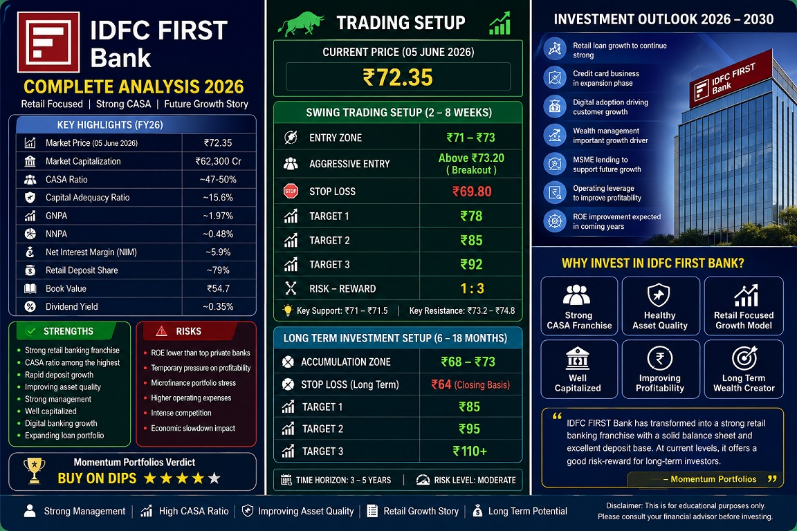

IDFC FIRST Bank Analysis 2026 | Entry ₹71-73 | Stop Loss ₹69.80 | Targets ₹78, ₹85, ₹92
Retail Banking Growth Story | Strong CASA Franchise | Long-Term Wealth Creation Candidate
IDFC FIRST Bank has successfully transformed from an infrastructure-focused lender into a fast-growing retail banking franchise under the leadership of V. Vaidyanathan. The bank continues to witness strong deposit growth, improving asset quality, expanding retail lending and a steadily growing customer base.
Despite temporary pressure from the microfinance segment during FY25-FY26, management expects normalization in credit costs and profitability over the coming quarters.
| Key Metrics | Latest Status |
|---|---|
| Current Market Price | ₹72.4 |
| Market Capitalization | ₹62,300 Crore |
| CASA Ratio | Above 50% |
| Capital Adequacy Ratio | ~15.6% |
| GNPA | ~1.9% |
| NNPA | ~0.48% |
| Book Value | ₹54.7 |
| Dividend Yield | 0.35% |
The bank's biggest strength is its transition towards retail banking. Today, major lending segments include Home Loans, Personal Loans, MSME Financing, Credit Cards, Vehicle Loans and Wealth Management.
Retail loans typically generate better margins and lower concentration risk compared to corporate lending. This transformation has significantly improved the bank's long-term growth prospects.
The bank has also built one of the strongest CASA franchises among mid-sized private sector banks, which helps maintain healthy net interest margins.
| Parameter | Level |
|---|---|
| Entry Zone | ₹71 – ₹73 |
| Aggressive Entry | Above ₹73.20 Breakout |
| Stop Loss | ₹69.80 |
| Target 1 | ₹78 |
| Target 2 | ₹85 |
| Target 3 | ₹92 |
Investors may consider accumulating the stock in the ₹68–73 zone for a 3–5 year horizon.
Strong Retail Franchise • High CASA Ratio • Improving Asset Quality • Long-Term Growth Potential
IDFC FIRST Bank remains one of the most promising turnaround stories in the Indian private banking sector. Investors with a 3–5 year horizon can consider accumulating on corrections.